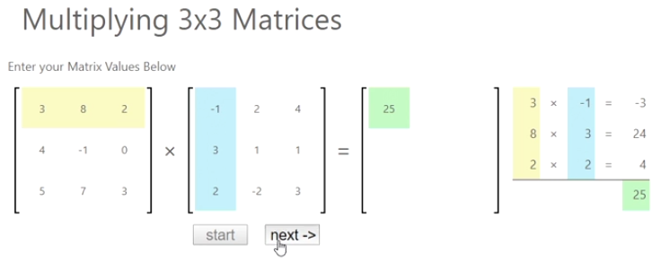
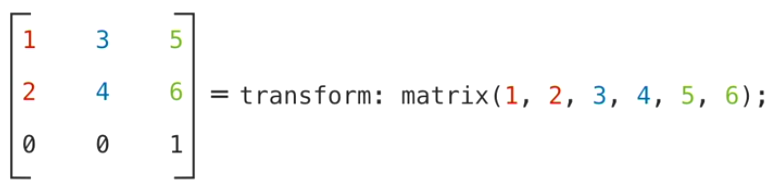
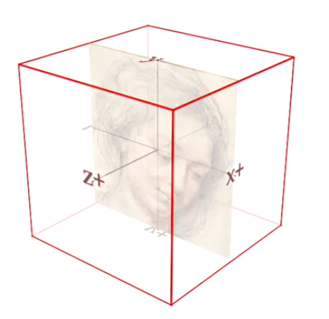
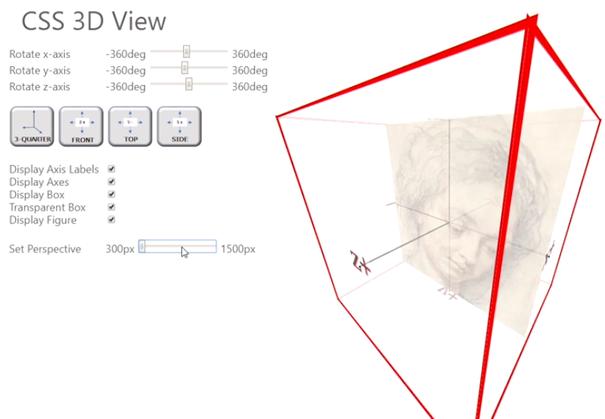

Transformation effects
The following lists different 2D transformations:
Original state of image
This shows the position of the image without any CSS added to adjust it.

Transformation is a property that alters the appearance of a page element by changing its size, moving it to another location on the page, or rotating it, sometimes doing all three at once.
Syntax: transform: effect(parameters);
The following lists different 2D transformations:
This shows the position of the image without any CSS added to adjust it.
<img src="../../_img/airplane.png"></img>
img {
transform: translateX(55px);
}
Example: This moves the image horizontally to the right.
Positive values shift to the right.
<img src="../../_img/airplane.png"></img>
img {
transform: translateY(55px);
}
Example: This moves the image vertically down.
Positive values shift down.
<img src="../../_img/airplane.png"></img>
img {
transform: translate(50px, 50px);
}
Example: This moves the image horizontally right and vertically down.
<img src="../../_img/airplane.png"></img>
img {
transform: scaleX(1.5);
}
Example: This increases the size horizontally by 1.5 times.
<img src="../../_img/airplane.png"></img>
img {
transform: scaleY(-1.5);
}
Example: This increases the height 1.5 times.
<img src="../../_img/airplane.png"></img>
img {
transform: scale(1.5, 0.3);
}
Example: This scales it 1.5 wide and 1.5 times reversed height.
<img src="../../_img/airplane.png"></img>
img {
transform: skewX(20deg);
}
Example: This skews the image horizontally right at 25 degress.
A negative value would skew it to the left.
<img src="../../_img/airplane.png"></img>
img {
transform: skewY(20deg);
}
Example: This skews the image vertically down right at 25 degress.
A negative value would skew it to the up to the right.
<img src="../../_img/airplane.png"></img>
img {
transform: skew(20deg, 20deg);
}
Example:
<img src="../../_img/airplane.png"></img>
img {
transform: rotate(45deg);
}
Example: This image is rotated clockwise 45 degrees.
All of the transformations above are done relative to the object's center.
You can also change the origin of the transformation using the 'origin' property.
syntax: transform-origin: center center;
If you want the origin to be on the right bottom, you'd use: transform-origin: right bottom;
For example, you can rotate around the right bottom of an image by using both properties:
transform: rotate(230deg);
transform-origin: right bottom;
When using multiple transformations, order is important. This is because each transformation will be based on the transformaiton that came before it.
For example, if you rotate an image first, then translate it, the image will be translated on the axis that it's already been rotated on first.
transform: rotate(330deg) translateY(-100);
One of the reasons that matrices are used for creating visual effects is that they enable us to apply mathematical operations to a whole array of numbers.
To multiply two matrices, we calculate the sum of the products from each row in the first matrix by each column in the second. Thus multiplying the two three-by-three matrices shown here results in another three-by-three matrix that contains all the product sums of every row and column combination.
CSS allows you to write the transformation matrix directly using the matrix function shown here. The values from the matrix function are laid out with the first two numbers representing the first two numbers from the first column of the transformation matrix, the next two numbers containing the values from the second column, and the last two numbers containing the values from the third column.
You might wonder why the matrix function doesn't include any numbers from the last row. We don't need to include those numbers, because they're always zero, zero, one by definition. The last row is only there to make the matrix multiplication work.
In a pseudo 3D space that's projected onto a webpage we define positions in terms of length, width, and height. These directions are labeled with a X axis, a Y axis, and a Z axis.
A page object, by default, is placed within the XY plane at the center of the Z axis which you view directly through the Z axis, but with CSS transformation styles we can change our angle of view so that we can observe this object from below, above, or behind. Rotating the object around either the Y axis, or the X axis, or the Z axis.
Another aspect of generating a 3D space in CSS is setting the perspective of the space. Perspective is a representation of the objects within the 3D virtual space so that objects which are further away appear smaller while objects which are nearer appear larger. In addition, objects which are further away appear to converge at a location called the vanishing point.
With small perspective values objects which are placed closer to the user along the Z axis appear larger while objects which are farther away appear to recede.
Every 3D transformation needs to have a perspective value, because, without perspective, there's no space for which the object to reside in.
You can also change the origin from which the object is transformed.
There are 4 rotation functions:
There are 4 translation functions:
There are 4 scaling functions:
When using multiple transformations, order is important. This is because each transformation will be based on the transformaiton that came before it.
For example, if you rotate an image first, then translate it, the image will be translated on the axis that it's already been rotated on first.
transform: perspective(1200px) translateX(190px) translateY(-40px) rotateX(50deg);
Continue here
The following are a few examples of how an object's perspective changes in 3D space.
asdf
<div id="img-container">
<img src="../../_img/airplane.png">
</div>
asdf